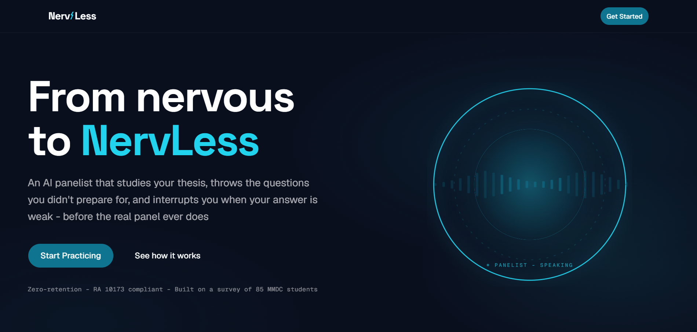
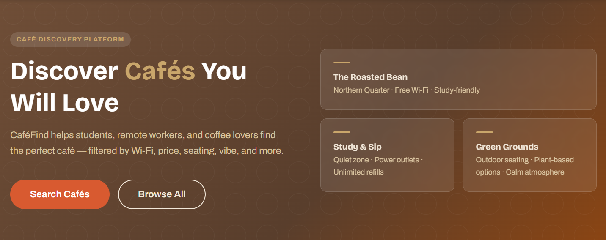

Languages
Core languages for application logic, scripting and data work.
- JavaScript
- Python
- Java
- SQL
Press Esc or choose Skip intro to jump straight to the portfolio.
Terminal introduction. J.R. Gabriel Portillo, BSIT Software Development student at Mapúa Malayan Colleges Laguna, currently seeking an IT internship. The portfolio loads automatically, or you can use the Skip intro button.
BSIT Software Development Student
Full-Stack and DevOps
Roles: Full-Stack Developer, DevOps, AI Integrator.
I am a software development student building practical applications across web development, backend systems, AI integration and DevOps. My work sits at the point where clean interfaces meet reliable infrastructure.

Open to internship opportunities
About
I care about how software is built, tested, shipped and monitored — not only about whether it looks finished.
I am J.R. Gabriel Portillo, a Bachelor of Science in Information Technology student majoring in Software Development at Mapúa Malayan Colleges Laguna. I have completed 149 of the 161 credits required for the degree and I am now focused on finishing my capstone and finding an IT internship in full-stack web development, backend systems, AI integration or DevOps.
Through academic and capstone projects I have built complete applications: React and Next.js interfaces, Node.js and Express APIs, SQL and NoSQL data models, automated test suites, and CI/CD pipelines backed by containerisation and monitoring dashboards.
My capstone, NervLess, is an AI mock thesis-defense simulator that turns an uploaded research paper into panel-style questions using a retrieval-augmented pipeline. I led most of the frontend development and contributed to the system architecture as part of a team.
Skills
Languages, frameworks and infrastructure used across academic, capstone and personal projects.
Core languages for application logic, scripting and data work.
Responsive, accessible interfaces built from wireframes up.
APIs and server-side logic that the frontend can rely on.
Relational and document data modelling, local and hosted.
Automated coverage for API behaviour and regressions.
Version control, pipelines, containers, monitoring and build tooling.
GitHub Activity
These cards are generated from public repository data by the open-source github-readme-stats service. They describe public activity only and are not a measure of professional experience.
stats card unavailable
The GitHub stats service did not respond. Your profile and repositories are still one click away below.
language card unavailable
The GitHub stats service did not respond. Your profile and repositories are still one click away below.
If a card above fails to load, the stats service may be rate limiting requests.
Projects
Three projects that reflect how I work: one capstone product, one DevOps-focused platform, and one full-stack discovery app. Each was built as part of a team or a course, with my individual contributions listed.

AI Mock Thesis-Defense Simulator
A web application that studies a student’s uploaded research paper and fires panel-style defense questions back at them, so they can practise answering out loud before the real panel does.

DevOps-Focused AI Tutoring Platform
A tutoring platform where students ask subject-specific questions through an AI chat client backed by a hardened delivery pipeline and live monitoring.

Full-Stack Café Discovery Web Application
A discovery app that helps students, remote workers and coffee lovers find the right café for the kind of work they need to do.
More repositories and coursework builds live on github.com/Gyabu.
Education
Software Development major at Mapúa Malayan Colleges Laguna — currently approaching graduation.
Mapúa Malayan Colleges Laguna (MCL)
Studying software development with an emphasis on building complete systems: analysis and design, web systems, platform technologies, mobile development and DevOps practices.
149 / 161 required credits completed
Capstone project, built with a student team
Leading most of the frontend build and contributing to the architecture of a retrieval-augmented question generator that turns research PDFs into realistic panel questions.
Contact
The fastest way to reach me is email. LinkedIn works well too if you would rather send a message there.
Phone
GitHub
Based in Las Piñas, Metro Manila, Philippines
No commands match that search.